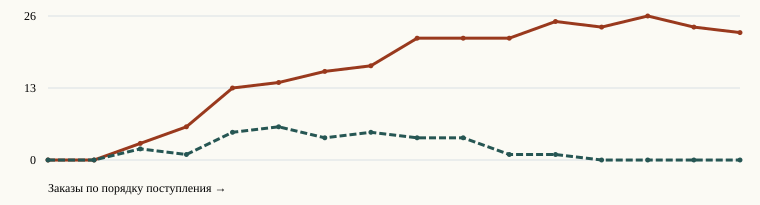
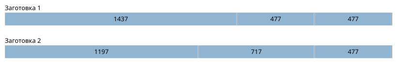

Queue Lens
PythonКогда стоит открыть вторую кассу? Симулятор проигрывает один журнал заказов с двумя графиками смен и показывает, кто будет ждать меньше.
Python / Solidity · Ростов-на-Дону
Пишу на Python. Люблю задачи, где результат можно проверить на конкретном примере — от очереди в кафе до раскроя доски.

Когда стоит открыть вторую кассу? Симулятор проигрывает один журнал заказов с двумя графиками смен и показывает, кто будет ждать меньше.

Шесть деталей помещаются на двух рейках, если поменять порядок раскроя. Программа учитывает каждый пропил и проверяет, можно ли обойтись меньшим числом заготовок.
Что произойдёт с выплатой ETH, если пополнить контракт в середине срока? Пошаговое демо сравнивает два графика и выгружает тест для Foundry.
Мой текущий проект. Инструмент анализирует публичную страницу компании, собирает замечания в HTML-отчёт и сохраняет историю проверок.
Пишу на Python пять лет, смарт-контрактами занимаюсь год. С осени 2024 по март 2025 работал в «Иктин Групп». Начал стажёром, затем перешёл на позицию Junior Python Developer.
Окончил Ростовский-на-Дону колледж связи и информатики. Сейчас учусь очно в НПИ на направлении «Информационные системы и технологии». Английский — C1.